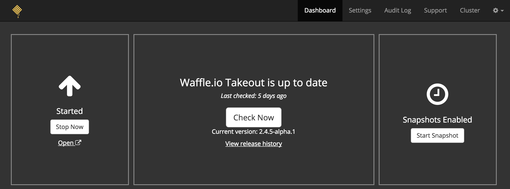
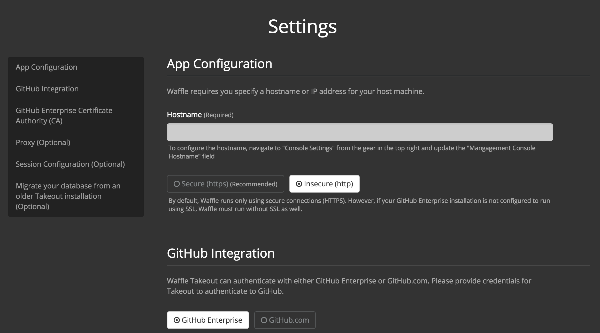

Moving from SaaS
to On-Premises with Docker

Why On-Premises?
Solving the right problem
Users want to use Waffle at work, but cannot access SaaS
Integrate with
The Challenge
- Package the app
- Deliver said package
- Install the app on the host machine
- Configure the app to actually work against GH:E
- Start everything up
- Handle HTTP traffic between services
Bonus: updates and licensing
Microservice Architecture
- App
- Api
- Webhooks
- etc.
Microservice Architecture
+ Each service could be neatly packaged and run on its own
- Networking was challenging
12 factor app
- Can be configured by env variables
- Configure which GitHub API to use
- Configure which database to use
- Configure location of services
Networking
Added NGINX* for HTTP routing
*This would require users to open up various sub-domains for Waffle to work
Packaging
VMs
Docker
Packaging
Each service got a Dockerfile
Each service got a quay.io repository
Each repository had a git trigger to build new images
Development didn't really change
Packaging
Delivery
Users download a package
- S3 bucket, email, etc.
Follow instructions for installation and configuration
Packaging
Docker save:
"Save one or more images to a tar archive"
Incorporated a bash build script to generate a tarball
Installation
Users download and extract tarball
Users execute 400 line bash installation script
Users configured the following types of information:
- GitHub OAuth credentials
- Database connection
- Service locations
- etc...
Up and running!
not so fast...
Drawbacks
- Bring Your Own Database
- Backups were on your own
- Networking was a pain
- Had to open up sub-domains on host network
- Needed to save off locations in an environment.list file
- Updates were new tarballs with update bash scripts
- Licensing would have to be built separately
Not all bad
- We were On-Prem!
- Maintainable by a small team
- App development hadn't really changed
- Some automation
- The use of Docker was validated by our users
Room for improvement...
Benefits
- Several features out of the box
- Backups
- Declarative Configuration
- Licensing
- Updates
Replicated
components:
- name: App
containers:
- source: quay.io
image_name: app
version: latest
components:
- name: API
containers:
- source: quay.io
image_name: api
version: latest
Replicated
volumes:
- host_path: /data
container_path: /data
permission: "0644"
owner: "100"
is_ephemeral: false
is_excluded_from_backup: true
Replicated
Replicated
Retire bash scripts in favor of UI based configuration
Benefits
Continue to use Docker infrastructure
#Winning
Further improvements
- Packaged a MongoDB instance
- Configured NGINX to route to components on the docker0 network
- Support Airgap installations
What worked?
- Relying on Docker technology and infrastructure
- Build, package, tag our services
- Utilize features such as docker0 network and route our services to the right ports
- Publish our application to a wide variety of host machines
- Develop the same way while swapping infrastructure
- Building out a well structured Microservice Architecture
What we learned
- On-Prem is possible without too much pain
- Can provide real value to customers
- Docker is great for developers, not just great for development
The Future
- Exicted to take Docker from Takeout to our CI/CD systems as well as production
- Move from Heroku to the Amazon EC2 Container Service
- Continuously deploy On-Prem releases
Thanks!
@songawee
p.s. we're hiring DevOps